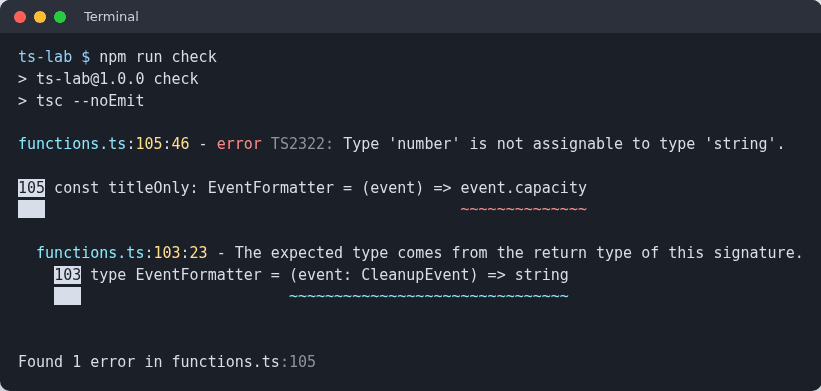

🔧 Lesson 2.3: Functions and Generics
Data sits still; functions do the work. Shoreline Crew HQ will be full of them: one turns a cleanup into a line of text, one finds a volunteer by id, one splits a long list into pages, and every React component you write from Module 3 on is a function too. Today you learn to give each function a clear contract (what goes in, what comes out, what may be left out), to pass functions around as values, and to write one function that works for sites, cleanups, volunteers or anything else without losing a single check. That last trick is called generics, and after today the angle brackets in Array<string> will read like plain English.
🎯 Learning Objectives
By the end of this lesson, you will be able to:
- Annotate a function's parameters and return type, and decide when an explicit return type is worth writing
- Use optional, default and rest parameters and an options object, and read the errors for missing or misplaced arguments
- Describe a function as a value with a function type, such as
(event: CleanupEvent) => string, and pass typed callbacks - Write generic functions and types (
first<T>,Page<T>) and let TypeScript infer the type arguments - Constrain a type parameter with
extendsso a generic function can use the properties it needs - Read overloaded and generic declarations in TypeScript's own library, such as
querySelectorandfind
📦 Code for this lesson
Starting code: lesson-05-start.zip · Finished code: lesson-05-end.zip. Each folder has a README with the commands to run it. The finished code adds ts-lab/functions.ts; run npm ci in ts-lab before npm run check.
In This Lesson
📜 A Function's Contract
You already typed a few functions in Lesson 2.1 (spotsLeft, totalBags) and many in Lesson 2.2. This lesson looks at functions on purpose. Work as before: in ts-lab, create scratch.ts, put each example in it, save, run npm run check, and node scratch.ts when the example prints something.
💡 Mental model: the job card
On cleanup day, each team gets a job card: "Bring: 2 buckets, 1 grabber per person. You will hand in: a bag count." A function's type is that card. The parameters are what the team must bring, the return type is what it promises to hand in, and TypeScript is the organizer at the table who checks both: nobody leaves without buckets, and nobody hands in a shopping list instead of a bag count.
Parameters and a return type
A type after each parameter, and one after the parentheses for the value the function returns:
function spotsLeft(capacity: number, taken: number): number {
return capacity - taken
}
console.log(spotsLeft(18, 11))
console.log(spotsLeft(18))
console.log(spotsLeft(18, '11'))Expected output (npm run check)
> ts-lab@1.0.0 check
> tsc --noEmit
scratch.ts:6:13 - error TS2554: Expected 2 arguments, but got 1.
6 console.log(spotsLeft(18))
~~~~~~~~~
scratch.ts:1:38 - An argument for 'taken' was not provided.
1 function spotsLeft(capacity: number, taken: number): number {
~~~~~~~~~~~~~
scratch.ts:7:27 - error TS2345: Argument of type 'string' is not assignable to parameter of type 'number'.
7 console.log(spotsLeft(18, '11'))
~~~~
Found 2 errors in the same file, starting at: scratch.ts:6Two calls, two questions. TS2554 counts the arguments ("Expected 2 arguments, but got 1") and the follow-up line points at the parameter that was not provided. TS2345 is Lesson 2.1's old friend: a string where a number belongs. Run node scratch.ts and you get 7, NaN and 7: JavaScript fills a missing argument with undefined and quietly turns '11' into a number. Unlike JavaScript, TypeScript counts.
Why write the return type?
Lesson 2.1 showed that TypeScript infers return types, and for small functions inside one file that is enough. Writing the return type changes where mistakes are reported:
function spotsLabel(capacity: number, taken: number): string {
const left = capacity - taken
if (left <= 0) {
return 'Full'
}
return left
}
function logCleanup(title: string): void {
console.log(`Logged: ${title}`)
}
logCleanup(spotsLabel(18, 18))Expected output (npm run check)
> ts-lab@1.0.0 check
> tsc --noEmit
scratch.ts:6:3 - error TS2322: Type 'number' is not assignable to type 'string'.
6 return left
~~~~~~
Found 1 error in scratch.ts:6The function promised a string and one path returns the number left. Because the promise is written down, the error lands on the line with the bug. Without : string, TypeScript would happily infer number | "Full" for the function, and the mistake would show up later, in some other file, wherever a caller treated the result as text. The course's rule, the same "annotate the edges" from Lesson 2.1: write the return type for functions other code relies on (shared helpers, anything exported in Lesson 2.4, the API client), and let inference handle small local ones.
logCleanup shows the other return type you need today: void, "returns nothing useful". Functions that only print, save or update something are void. You will see it constantly in React, where a click handler's type is () => void.
🎛️ Optional, Default and Rest Parameters
JavaScript lets callers leave arguments out or pass any number of them. TypeScript keeps that freedom, but makes you say so in the parameter list:
function eventLine(title: string, town?: string) {
if (town === undefined) {
return title
}
return `${title} (${town})`
}
function spotsText(left: number, unit = 'spots') {
return `${left} ${unit} left`
}
function totalBags(...counts: number[]) {
return counts.reduce((sum, count) => sum + count, 0)
}
console.log(eventLine('Weekend Cove Cleanup'))
console.log(eventLine('Weekend Cove Cleanup', 'Port Marisol'))
console.log(spotsText(4))
console.log(spotsText(1, 'spot'))
console.log(totalBags(14, 9, 22))Expected output (node scratch.ts)
Weekend Cove Cleanup
Weekend Cove Cleanup (Port Marisol)
4 spots left
1 spot left
45- Optional,
town?: string: callers may leave it out, and inside the function its type isstring | undefined, exactly like an optional property in Lesson 2.2. That is whyeventLinechecks forundefinedfirst. - Default,
unit = 'spots': callers may leave it out, and then it is'spots'. TypeScript infers the type from the default (string), and inside the function it is neverundefined. Hover overspotsText: VS Code shows(left: number, unit?: string) => string, because from the caller's side a default parameter is simply optional. - Rest,
...counts: number[]: any number of arguments, collected into an array. Its type is always an array type.
Two rules come with them. Optional parameters go after the required ones (otherwise how would TypeScript know which argument you meant?), and a default's type is enforced like any other:
function eventLine(town?: string, title: string) {
return town === undefined ? title : `${title} (${town})`
}
function spotsText(left: number, unit = 'spots') {
return `${left} ${unit} left`
}
console.log(eventLine('Port Marisol', 'Weekend Cove Cleanup'))
console.log(spotsText(4, 1))Expected output (npm run check)
> ts-lab@1.0.0 check
> tsc --noEmit
scratch.ts:1:35 - error TS1016: A required parameter cannot follow an optional parameter.
1 function eventLine(town?: string, title: string) {
~~~~~
scratch.ts:10:26 - error TS2345: Argument of type 'number' is not assignable to parameter of type 'string'.
10 console.log(spotsText(4, 1))
~
Found 2 errors in the same file, starting at: scratch.ts:1TS1016 is the order rule. The second error proves that unit, which has no annotation, is still a string: the default said so.
Many options? Pass one object
Three or four optional parameters in a row make calls unreadable: what does eventLine(title, town, false, '*') mean? Pass an options object instead, and give each option its default as you destructure it:
interface LineOptions {
showTown?: boolean
prefix?: string
}
function eventLine(
title: string,
town: string,
{ showTown = true, prefix = '-' }: LineOptions = {},
) {
return showTown ? `${prefix} ${title} (${town})` : `${prefix} ${title}`
}
console.log(eventLine('Weekend Cove Cleanup', 'Port Marisol'))
console.log(eventLine('Weekend Cove Cleanup', 'Port Marisol', { showTown: false }))
console.log(eventLine('Weekend Cove Cleanup', 'Port Marisol', { prefix: '*', showTwon: false }))Expected output (npm run check)
> ts-lab@1.0.0 check
> tsc --noEmit
scratch.ts:16:78 - error TS2561: Object literal may only specify known properties, but 'showTwon' does not exist in type 'LineOptions'. Did you mean to write 'showTown'?
16 console.log(eventLine('Weekend Cove Cleanup', 'Port Marisol', { prefix: '*', showTwon: false }))
~~~~~~~~
Found 1 error in scratch.ts:16Read the parameter from the inside out: the object has the type LineOptions, both of its properties are optional, the destructuring gives each a default, and = {} lets callers leave the whole object out. Callers name what they change ({ showTown: false }), and a misspelled option is caught by the same TS2561 you met in Lesson 2.2. Fix showTwon and node scratch.ts prints three lines. Remember this shape: a React component receives its props as exactly this kind of object, destructured with defaults, from Lesson 3.2 on.
📨 Functions as Values
In JavaScript you pass functions around all the time: to map, filter, addEventListener. So TypeScript needs a way to describe a function as a type. It looks like an arrow function with types and no body: (event: CleanupEvent) => string means "a function that takes a cleanup and returns a string".
interface CleanupEvent {
title: string
capacity: number
spotsTaken: number
}
// Any function that takes a cleanup and returns a line of text
type EventFormatter = (event: CleanupEvent) => string
const titleOnly: EventFormatter = (event) => event.title
const withSpots: EventFormatter = (event) =>
`${event.title}: ${event.capacity - event.spotsTaken} left`
function printAll(events: CleanupEvent[], format: EventFormatter): void {
for (const event of events) {
console.log(format(event))
}
}
const upcoming: CleanupEvent[] = [
{ title: 'Weekend Cove Cleanup', capacity: 18, spotsTaken: 18 },
{ title: 'Boardwalk and Mudflats', capacity: 16, spotsTaken: 9 },
]
printAll(upcoming, titleOnly)
printAll(upcoming, withSpots)
printAll(upcoming, (event) => event.title.toUpperCase())Expected output (node scratch.ts)
Weekend Cove Cleanup
Boardwalk and Mudflats
Weekend Cove Cleanup: 0 left
Boardwalk and Mudflats: 7 left
WEEKEND COVE CLEANUP
BOARDWALK AND MUDFLATSThree things to notice:
- A
typealias names the function type, soEventFormattercan be reused. (The course convention from Lesson 2.2 holds:typefor everything that is not an object shape.) - None of the arrow functions annotates
event, yet each one knows it is aCleanupEvent. This is contextual typing, the same thing that typedreduce's callback in Lesson 2.1: the function type says what the parameter is, so you do not repeat it. printAlltakes a function as a parameter, a callback. The last call passes one written on the spot, and it is checked just the same.
A callback that does not fit is reported with a helpful extra line:
printAll(upcoming, (event) => event.capacity - event.spotsTaken)
printAll(upcoming, (title: string) => title)Expected output (npm run check, with these two calls at the end of the example above)
> ts-lab@1.0.0 check
> tsc --noEmit
scratch.ts:27:31 - error TS2322: Type 'number' is not assignable to type 'string'.
27 printAll(upcoming, (event) => event.capacity - event.spotsTaken)
~~~~~~~~~~~~~~~~~~~~~~~~~~~~~~~~~
scratch.ts:8:23 - The expected type comes from the return type of this signature.
8 type EventFormatter = (event: CleanupEvent) => string
~~~~~~~~~~~~~~~~~~~~~~~~~~~~~~~
scratch.ts:28:20 - error TS2345: Argument of type '(title: string) => string' is not assignable to parameter of type 'EventFormatter'.
Types of parameters 'title' and 'event' are incompatible.
Type 'CleanupEvent' is not assignable to type 'string'.
28 printAll(upcoming, (title: string) => title)
~~~~~~~~~~~~~~~~~~~~~~~~
Found 2 errors in the same file, starting at: scratch.ts:27The first callback returns a number; the follow-up line says the expectation comes from the function type's return type. The second expects a string where every caller of EventFormatter will hand it a CleanupEvent: the parameters are incompatible, and the indented lines say exactly how. A callback may ignore parameters it does not need, but it cannot ask for something different.
🧬 Generics: One Function for Any Type
Here is a problem you will hit within a week of writing real TypeScript. You want "the first item of a list", for sites, for bag counts, later for cleanups and volunteers. Two obvious answers, both bad:
interface Site {
id: string
name: string
}
const sites: Site[] = [{ id: 'driftwood-cove', name: 'Driftwood Cove' }]
const bagCounts = [14, 9, 22]
// One function per type: the same body twice
function firstSite(items: Site[]): Site | undefined {
return items[0]
}
function firstCount(items: number[]): number | undefined {
return items[0]
}
// One function for everything, with any: the types are gone
function firstAny(items: any[]): any {
return items[0]
}
console.log(firstSite(sites)?.name, firstCount(bagCounts))
console.log(firstAny(sites).nmae)Expected output (node scratch.ts; npm run check is silent)
Driftwood Cove 14
undefinedWriting one function per type repeats the same body forever. The any version works for everything, and that is the problem: firstAny(sites).nmae has a typo, the check is silent, and the program prints undefined. You traded every check for convenience, the deal Lesson 2.1 warned about.
A type parameter
A generic function takes a type as a parameter, the way a normal function takes a value. You declare it in angle brackets after the name, and then use it like any type:
interface Site {
id: string
name: string
}
const sites: Site[] = [{ id: 'driftwood-cove', name: 'Driftwood Cove' }]
const bagCounts = [14, 9, 22]
function first<T>(items: T[]): T | undefined {
return items[0]
}
const site = first(sites)
const count = first(bagCounts)
const nobody = first<string>([])
console.log(site?.name ?? 'No sites', count ?? 0, nobody ?? 'Nobody yet')
console.log(site?.nmae)Expected output (npm run check)
> ts-lab@1.0.0 check
> tsc --noEmit
scratch.ts:18:19 - error TS2339: Property 'nmae' does not exist on type 'Site'.
18 console.log(site?.nmae)
~~~~
Found 1 error in scratch.ts:18Read function first<T>(items: T[]): T | undefined aloud: "for some type T, first takes an array of T and returns a T, or undefined if the array is empty". T is a placeholder that gets filled in at each call, and you almost never fill it in yourself: TypeScript infers it from the argument. first(sites) fills in Site, so site is Site | undefined and the typo is caught. first(bagCounts) fills in number. When there is nothing to infer from, such as an empty array, you can pass the type explicitly: first<string>([]). Fix the typo, and node scratch.ts prints Driftwood Cove 14 Nobody yet.
💡 Mental model: the labeled bin
The crew's sorting bins have a blank label holder. Slide in "Glass" and it is the glass bin: everything that goes in is glass, everything that comes out is glass. The bin is the same design every time; the label is what changes. A generic is that bin, and T is the blank label. TypeScript reads the label from what you put in first and then holds you to it.
Why T | undefined and not just T? Because an array can be empty, and items[0] on an empty array is undefined. With this lesson's settings TypeScript would accept : T without complaint; Lesson 2.4 looks at the setting that makes it insist. Being honest in the return type costs one ?. or ?? at each call, and that is cheap.
Generic types
Types can take type parameters too. You have been using one since Lesson 2.1: Array<number> is the long way to write number[]. The API sends long lists in pages, and a page looks the same whether it holds cleanups or volunteers, so it is a generic type:
interface Volunteer {
id: string
name: string
}
// A generic type: a page of anything
interface Page<T> {
items: T[]
page: number
totalPages: number
}
const crewPage: Page<Volunteer> = {
items: [{ id: 'v02', name: 'Luis Romero' }, { id: 'v03', name: 'Hannah Becker' }],
page: 1,
totalPages: 12,
}
const bagPage: Page<number> = { items: [14, 9, 22], page: 1, totalPages: 1 }
const names: Array<string> = crewPage.items.map((person) => person.name)
const sizes = new Map<string, number>([['Luis Romero', 2]])
console.log(`Page ${crewPage.page} of ${crewPage.totalPages}: ${names.join(', ')}`)
console.log(bagPage.items.length, sizes.get('Luis Romero'))Expected output (node scratch.ts)
Page 1 of 12: Luis Romero, Hannah Becker
3 2For a type you write the type argument yourself (Page<Volunteer>); there is nothing to infer it from. JavaScript's own Map takes two, the key type and the value type. You will meet many more: Promise<T> for "a T, later" (Module 4), React's useState<T> (Lesson 3.4), and TanStack Query's hooks (Module 7). They all read the same way: the thing, holding T.
🔒 Constraints: What T Must Have
Inside a generic function, TypeScript knows nothing about T: it could be a number, a string or a site. So it lets you do only what works for every type:
function findById<T>(items: T[], id: string): T | undefined {
return items.find((item) => item.id === id)
}Expected output (npm run check)
> ts-lab@1.0.0 check
> tsc --noEmit
scratch.ts:2:36 - error TS2339: Property 'id' does not exist on type 'T'.
2 return items.find((item) => item.id === id)
~~
Found 1 error in scratch.ts:2Fair question: what if T is number? Numbers have no id. The answer is a constraint: T extends { id: string } means "T can be any type, as long as it has an id that is a string".
interface Site {
id: string
name: string
}
interface Volunteer {
id: string
name: string
phone: string | null
}
const sites: Site[] = [{ id: 'driftwood-cove', name: 'Driftwood Cove' }]
const crew: Volunteer[] = [{ id: 'v03', name: 'Hannah Becker', phone: null }]
const bagCounts = [14, 9, 22]
// T can be any type that has at least an id that is a string
function findById<T extends { id: string }>(items: T[], id: string): T | undefined {
return items.find((item) => item.id === id)
}
console.log(findById(sites, 'driftwood-cove')?.name)
console.log(findById(crew, 'v03')?.phone)
console.log(findById(bagCounts, 'v03'))Expected output (npm run check)
> ts-lab@1.0.0 check
> tsc --noEmit
scratch.ts:22:22 - error TS2345: Argument of type 'number[]' is not assignable to parameter of type '{ id: string; }[]'.
Type 'number' is not assignable to type '{ id: string; }'.
22 console.log(findById(bagCounts, 'v03'))
~~~~~~~~~
Found 1 error in scratch.ts:22Sites and volunteers both have a string id, so both are welcome, and each call still returns its own type: findById(crew, 'v03') is a Volunteer | undefined, which is why ?.phone is allowed. The bag counts are turned away at the door, with a message that names the constraint. Delete the last line and node scratch.ts prints Driftwood Cove and null (Hannah has no phone on file).
Notice the word: extends here means "has at least", the same as in interface CleanupEventDetail extends CleanupEvent. A Volunteer has an id plus more, and that is fine.
📖 Reading Overloads and Library Types
You will read far more function types than you write, and many of them come from TypeScript's own description of the browser and of JavaScript. Two features show up there all the time: overloads and generics with constraints. Try this one (only check it: Node has no document, so running it fails with ReferenceError: document is not defined):
// Check this one only: Node has no document (the browser does)
const picture = document.querySelector('img')
const card = document.querySelector('.site-card')
console.log(picture?.alt)
console.log(card?.alt)Expected output (npm run check)
> ts-lab@1.0.0 check
> tsc --noEmit
scratch.ts:6:19 - error TS2339: Property 'alt' does not exist on type 'Element'.
6 console.log(card?.alt)
~~~
Found 1 error in scratch.ts:6Same function, two different results. Hover over each variable: picture is an HTMLImageElement | null, which has alt; card is a plain Element | null, which does not. TypeScript can tell because querySelector has several overloads: separate signatures for the same function, and TypeScript picks the first one that fits the call. Right-click querySelector and choose Go to Definition (F12), and VS Code opens TypeScript's own declarations. Here are two of the five signatures:
querySelector<K extends keyof HTMLElementTagNameMap>(selectors: K): HTMLElementTagNameMap[K] | null;
// ...
querySelector<E extends Element = Element>(selectors: string): E | null;You can read these now. The first: "for a K that is one of the HTML tag names, return the element type for that tag, or null". 'img' is a tag name, so you get an HTMLImageElement. (keyof means "one of the property names of": HTMLElementTagNameMap is a long interface from tag names to element types. Exercise 3 uses keyof itself.) The last signature catches every other string, such as '.site-card', and returns a general Element (the = Element is a default for the type parameter). In VS Code, a hover that says (+4 overloads) is telling you there are more signatures to read.
One more, the find you used in Lesson 2.2 on arrays of sites:
find<S extends T>(predicate: (value: T, index: number, obj: T[]) => value is S, thisArg?: any): S | undefined;
find(predicate: (value: T, index: number, obj: T[]) => unknown, thisArg?: any): T | undefined;Two overloads, both with a callback parameter described by a function type, and an optional thisArg?. Read the second: "find takes a callback that receives a T, its index and the whole array, and returns a T or undefined". That T | undefined is why sites.find(...) needed ?. in Lesson 2.2. The first overload, with value is S, is for a special kind of callback called a type predicate; you write your first one in Lesson 2.4.
💡 Should you write overloads?
Rarely. Overloads earn their place in libraries that describe old, flexible JavaScript functions. In your own code, a union parameter, an optional parameter or a generic almost always says the same thing more simply, and every function in Shoreline Crew HQ will be written that way. Reading them is the skill you need.
✅ Declaration files are documentation you can trust
Blog posts go out of date; the declaration files that come with TypeScript and with each library describe the exact version you installed. Developers who open them with F12 instead of guessing get unstuck faster, and the /** */ comments above each signature often answer the question outright. It feels slow the first few times. Then it becomes the fastest documentation you have.
⚠️ Common Mistakes
⚠️ Reaching for any to make a function reusable
function firstAny(items: any[]): any accepts everything and checks nothing: the misspelled .nmae passed the check and printed undefined. A type parameter gives you the same reuse with every check intact.
⚠️ Using a property of T without a constraint
error TS2339: Property 'id' does not exist on type 'T'. means the function has not said what T must have. Add a constraint (T extends { id: string }) rather than any or a !.
⚠️ An optional parameter before a required one
error TS1016: A required parameter cannot follow an optional parameter. Move the optional one to the end, give it a default, or collect the options in an object.
⚠️ A return type and a path that returns nothing
This statusLabel handles two of the four statuses:
type EventStatus = 'draft' | 'scheduled' | 'completed' | 'cancelled'
function statusLabel(status: EventStatus): string {
if (status === 'scheduled') {
return 'Scheduled'
}
if (status === 'completed') {
return 'Completed'
}
}
console.log(statusLabel('draft'))Expected output (npm run check)
> ts-lab@1.0.0 check
> tsc --noEmit
scratch.ts:3:44 - error TS2366: Function lacks ending return statement and return type does not include 'undefined'.
3 function statusLabel(status: EventStatus): string {
~~~~~~
Found 1 error in scratch.ts:3Without : string, the check would be silent and the function would quietly return undefined for drafts (it does when you run it). With it, TS2366 says some path falls off the end. This is one answer to Lesson 2.2's bonus question: a return type makes TypeScript insist that every status is handled. Return something on every path, or end with a fallback return.
🛠️ Project: The Crew's Helper Functions
You will write ts-lab/functions.ts: the small functions Shoreline Crew HQ needs again and again, typed properly, plus four generic helpers that work for cleanups and volunteers alike. Several of them come back in the app: pluralize and spotsLeft as the app's format helpers, Page<T> when the HQ reads the API's pages, and function types as the props components use to report clicks.
Step 1: Types and sample data (10 min)
Delete scratch.ts if it is still there (keep a copy of anything you want). In ts-lab, create functions.ts. Copy EventStatus, CleanupEvent and Volunteer from your shapes.ts, then add the sample data:
// Shoreline Crew functions (Lesson 2.3): typed functions, function types and generics
// Copied from shapes.ts: each ts-lab file has its own types until Lesson 2.4 shares them
type EventStatus = 'draft' | 'scheduled' | 'completed' | 'cancelled'
interface CleanupEvent {
id: string
title: string
siteId: string
status: EventStatus
startTime: string
capacity: number
spotsTaken: number
}
interface Volunteer {
id: string
name: string
phone: string | null
}
const events: CleanupEvent[] = [
{
id: 'e08',
title: 'Weekend Cove Cleanup',
siteId: 'driftwood-cove',
status: 'scheduled',
startTime: '09:00',
capacity: 18,
spotsTaken: 18,
},
{
id: 'e09',
title: 'Boardwalk and Mudflats',
siteId: 'sandpiper-flats',
status: 'scheduled',
startTime: '10:00',
capacity: 16,
spotsTaken: 15,
},
{
id: 'e15',
title: 'Harbor Kayak Cleanup',
siteId: 'north-jetty',
status: 'draft',
startTime: '09:00',
capacity: 8,
spotsTaken: 0,
},
{
id: 'e01',
title: 'Storm Debris Sweep',
siteId: 'driftwood-cove',
status: 'completed',
startTime: '09:00',
capacity: 20,
spotsTaken: 20,
},
]
const crew: Volunteer[] = [
{ id: 'v01', name: 'Maya Okafor', phone: '(831) 555-0101' },
{ id: 'v02', name: 'Luis Romero', phone: '(831) 555-0102' },
{ id: 'v03', name: 'Hannah Becker', phone: null },
{ id: 'v04', name: 'Theo Nakamura', phone: '(831) 555-0104' },
{ id: 'v05', name: 'Amara Diallo', phone: null },
]Yes, the types are copied. Each file in ts-lab is its own module (the moduleDetection setting from Lesson 2.1), so the same names in two files do not clash, and neither file can see the other's types yet. Lesson 2.4 shows how files share types with export and import, and the copying ends there. Run npm run check: silent.
Step 2: Parameters, defaults and return types (10 min)
Add three helpers and a few lines that use them at the end of the file:
// ...
// Parameters, defaults and return types
function spotsLeft(event: CleanupEvent): number {
return Math.max(event.capacity - event.spotsTaken, 0)
}
function pluralize(count: number, word: string, plural = `${word}s`): string {
return count === 1 ? `1 ${word}` : `${count} ${plural}`
}
interface LineOptions {
showStatus?: boolean
prefix?: string
}
function eventLine(
event: CleanupEvent,
{ showStatus = false, prefix = '-' }: LineOptions = {},
): string {
const left = spotsLeft(event)
const spots = left === 0 ? 'full' : `${pluralize(left, 'spot')} left`
const line = `${prefix} ${event.title}: ${spots}`
return showStatus ? `${line} [${event.status}]` : line
}
console.log('All cleanups:')
for (const event of events) {
console.log(eventLine(event))
}
console.log(pluralize(1, 'bag'), '/', pluralize(3, 'bag'), '/', pluralize(2, 'person', 'people'))npm run check
node functions.tsExpected output (node functions.ts)
All cleanups:
- Weekend Cove Cleanup: full
- Boardwalk and Mudflats: 1 spot left
- Harbor Kayak Cleanup: 8 spots left
- Storm Debris Sweep: full
1 bag / 3 bags / 2 peopleEach helper has a written return type: the crew's whole app will lean on them. pluralize's default refers to an earlier parameter (`${word}s`), which works because defaults are worked out at the time of the call, left to right; person needs the third argument. eventLine takes an options object with defaults, so eventLine(event) and eventLine(event, { showStatus: true }) both read clearly.
Step 3: Function types and callbacks (10 min)
Add a function type, two formatters, a function that takes a formatter, and a test for filter:
// ...
// Function types
// Any function that turns a cleanup into a line of text
type EventFormatter = (event: CleanupEvent) => string
const titleOnly: EventFormatter = (event) => `- ${event.title}`
const withStatus: EventFormatter = (event) => eventLine(event, { showStatus: true })
function printAll(list: CleanupEvent[], format: EventFormatter): void {
for (const event of list) {
console.log(format(event))
}
}
function isOpen(event: CleanupEvent): boolean {
return event.status === 'scheduled' && spotsLeft(event) > 0
}
console.log('Titles only:')
printAll(events, titleOnly)
console.log('Open for sign-ups:')
printAll(events.filter(isOpen), withStatus)Expected output (node functions.ts, the new lines)
...
Titles only:
- Weekend Cove Cleanup
- Boardwalk and Mudflats
- Harbor Kayak Cleanup
- Storm Debris Sweep
Open for sign-ups:
- Boardwalk and Mudflats: 1 spot left [scheduled]isOpen is a normal function declaration, yet events.filter(isOpen) accepts it: filter wants a function that takes a CleanupEvent and returns something it can treat as true or false, and isOpen fits. Function types describe the shape of a function, not how it was written. withStatus calls eventLine with options, so the formatters build on Step 2.
Step 4: Four generic helpers (14 min)
Now the reusable ones. Each works for any list, and each call keeps the list's own type:
// ...
// Generics: one function for any type
function first<T>(items: T[]): T | undefined {
return items[0]
}
// T can be any type that has at least an id that is a string
function findById<T extends { id: string }>(items: T[], id: string): T | undefined {
return items.find((item) => item.id === id)
}
function groupBy<T, K>(items: T[], keyOf: (item: T) => K): Map<K, T[]> {
const groups = new Map<K, T[]>()
for (const item of items) {
const key = keyOf(item)
const group = groups.get(key)
if (group === undefined) {
groups.set(key, [item])
} else {
group.push(item)
}
}
return groups
}
// The API's paging information, and a page of anything
interface PageInfo {
page: number
perPage: number
total: number
totalPages: number
}
interface Page<T> {
items: T[]
page: PageInfo
}
function paginate<T>(items: T[], page = 1, perPage = 10): Page<T> {
const start = (page - 1) * perPage
return {
items: items.slice(start, start + perPage),
page: { page, perPage, total: items.length, totalPages: Math.ceil(items.length / perPage) },
}
}
console.log(`First cleanup: ${first(events)?.title ?? 'none yet'}`)
console.log(`v03 is ${findById(crew, 'v03')?.name ?? 'nobody'}`)
console.log(`e99 is ${findById(events, 'e99')?.title ?? 'not a cleanup'}`)
const byStatus = groupBy(events, (event) => event.status)
for (const [status, group] of byStatus) {
console.log(`${status}: ${pluralize(group.length, 'cleanup')}`)
}
const crewPage = paginate(crew, 2, 2)
const names = crewPage.items.map((person) => person.name).join(', ')
console.log(`Crew page ${crewPage.page.page} of ${crewPage.page.totalPages}: ${names}`)Expected output (node functions.ts, the new lines)
...
First cleanup: Weekend Cove Cleanup
v03 is Hannah Becker
e99 is not a cleanup
scheduled: 2 cleanups
draft: 1 cleanup
completed: 1 cleanup
Crew page 2 of 3: Hannah Becker, Theo NakamuraHover to see what TypeScript filled in. byStatus is a Map<EventStatus, CleanupEvent[]>: groupBy has two type parameters, and K was inferred from what your callback returns. crewPage is a Page<Volunteer>, so person.name in the map is checked. paginate combines everything from today: a type parameter, two defaults and a generic return type.
![The TypeScript Playground editor showing the groupBy function and the line const byStatus = groupBy(events, (event) => event.status). A hover pop-up over groupBy reads: function groupBy<CleanupEvent, EventStatus>(items: CleanupEvent[], keyOf: (item: CleanupEvent) => EventStatus): Map<EventStatus, CleanupEvent[]>.](images/lesson_05/05-hover-generic.png)
T is CleanupEvent (from the list), K is EventStatus (from what the callback returns), so the result is a Map<EventStatus, CleanupEvent[]>. VS Code shows the same pop-up.Step 5: Break it four ways (10 min)
One change at a time: make it, run npm run check, read the whole message, undo it (Ctrl+Z, or ⌘ Cmd+Z on a Mac). For each, write down the code and the question TypeScript is asking.
- A constraint removed: change
function findById<T extends { id: string }>(tofunction findById<T>(. - A formatter that breaks its type: change
titleOnly's body to(event) => event.capacity. - A missing argument: in the
byStatusloop, changepluralize(group.length, 'cleanup')topluralize(group.length). - A broken promise: in
paginate, delete theitems: items.slice(start, start + perPage),line.
Expected output (1: a constraint removed)
> ts-lab@1.0.0 check
> tsc --noEmit
functions.ts:131:36 - error TS2339: Property 'id' does not exist on type 'T'.
131 return items.find((item) => item.id === id)
~~
Found 1 error in functions.ts:131
EventFormatter promised a string.Expected output (2: a formatter that breaks its type)
> ts-lab@1.0.0 check
> tsc --noEmit
functions.ts:105:46 - error TS2322: Type 'number' is not assignable to type 'string'.
105 const titleOnly: EventFormatter = (event) => event.capacity
~~~~~~~~~~~~~~
functions.ts:103:23 - The expected type comes from the return type of this signature.
103 type EventFormatter = (event: CleanupEvent) => string
~~~~~~~~~~~~~~~~~~~~~~~~~~~~~~~
Found 1 error in functions.ts:105Expected output (3: a missing argument)
> ts-lab@1.0.0 check
> tsc --noEmit
functions.ts:175:29 - error TS2554: Expected 2-3 arguments, but got 1.
175 console.log(`${status}: ${pluralize(group.length)}`)
~~~~~~~~~
functions.ts:75:35 - An argument for 'word' was not provided.
75 function pluralize(count: number, word: string, plural = `${word}s`): string {
~~~~~~~~~~~~
Found 1 error in functions.ts:175Expected output (4: a broken promise)
> ts-lab@1.0.0 check
> tsc --noEmit
functions.ts:163:3 - error TS2741: Property 'items' is missing in type '{ page: { page: number; perPage: number; total: number; totalPages: number; }; }' but required in type 'Page<T>'.
163 return {
~~~~~~
functions.ts:157:3 - 'items' is declared here.
157 items: T[]
~~~~~
Found 1 error in functions.ts:163Mistake 3 says "Expected 2-3 arguments": the count includes the optional plural. Mistake 4 is Lesson 2.2's TS2741 on a generic type: the return type Page<T> promised items, and the object no longer has them. Notice that the error is inside paginate, not at the call: that is the written return type at work. Undo every change until npm run check is silent again.
Step 6: Meet your groupBy in the language (5 min)
Grouping is so common that JavaScript now ships it. Change groupBy(events, to Map.groupBy(events, in the byStatus line, run npm run check and node functions.ts: the check is silent and the output is identical. Now right-click groupBy after Map. and choose Go to Definition:
interface MapConstructor {
/**
* Groups members of an iterable according to the return value of the passed callback.
* @param items An iterable.
* @param keySelector A callback which will be invoked for each item in items.
*/
groupBy<K, T>(
items: Iterable<T>,
keySelector: (item: T, index: number) => K,
): Map<K, T[]>;
}It is your function, almost line for line: two type parameters, a callback described by a function type, a Map<K, T[]> back. (Iterable<T> accepts arrays and other things you can loop over; the callback also gets an index.) You can read the declarations of the tools you use, because you just wrote one. Change the line back to your own groupBy, so your file matches the finished code. Map.groupBy is a recent addition to JavaScript: it runs in Node 22 and newer and in current browsers.
Your own project: list three helper functions the app you are planning for Lesson 11.1 will need (a formatter, a lookup, a filter). Write each one's type as a function type, such as (event: CleanupEvent) => string, and mark which one could be generic.
✅ Project Completion Checklist
- ☐
functions.tshasspotsLeft,pluralize(with a default) andeventLine(with an options object), each with a written return type - ☐ It has the
EventFormatterfunction type, two formatters,printAllandisOpen - ☐ It has
first,findById(with a constraint),groupByandpaginatereturning aPage<T> - ☐
node functions.tsprints the twenty lines above, andnpm run checkreports no errors - ☐ I produced TS2339, TS2322, TS2554 and TS2741 and wrote down the question each one asks
- ☐ I read
Map.groupBy's declaration and can say whatKandTare in my call
🏋️ Hands-on Exercises
Exercises 1 and 2 are part of the lesson (about 15 minutes together, included in the lesson time). Use scratch.ts for each, and delete scratch.ts when you are done, so ts-lab keeps one file per lesson.
🏋️ Exercise 1: Count what matches
Write a generic countWhere that takes a list and a test function and returns how many items pass the test. Use it twice: to count crew members with no phone on file (phone === null), and to count the cleanups in [14, 9, 22, 6] that filled 10 bags or more. Do not annotate the callbacks' parameters; let the function type do it.
💡 Hint
The signature is the whole exercise: countWhere<T>(items: T[], test: (item: T) => boolean): number. The body is a loop with a counter, or items.filter(test).length.
✅ Solution
interface Volunteer {
id: string
name: string
phone: string | null
}
const crew: Volunteer[] = [
{ id: 'v01', name: 'Maya Okafor', phone: '(831) 555-0101' },
{ id: 'v03', name: 'Hannah Becker', phone: null },
{ id: 'v05', name: 'Amara Diallo', phone: null },
]
const bagCounts = [14, 9, 22, 6]
function countWhere<T>(items: T[], test: (item: T) => boolean): number {
let count = 0
for (const item of items) {
if (test(item)) {
count += 1
}
}
return count
}
console.log(`${countWhere(crew, (person) => person.phone === null)} people have no phone on file`)
console.log(`${countWhere(bagCounts, (bags) => bags >= 10)} cleanups filled 10 bags or more`)Expected output (node scratch.ts)
2 people have no phone on file
2 cleanups filled 10 bags or moreHover over person and bags: one is a Volunteer, the other a number, both inferred, because T comes from the list and the callback's type comes from T. Arrays have this built in as items.filter(test).length; writing it yourself is how you learn to read such signatures.
🏋️ Exercise 2: Three questions in one file
Put this in scratch.ts and run npm run check. Answer each of the three errors in code, without any, ! or changing Site or SiteFormatter, so that the check is silent and node scratch.ts prints Driftwood Cove, North Jetty, - Driftwood Cove and NORTH JETTY.
interface Site {
id: string
name: string
}
const sites: Site[] = [
{ id: 'driftwood-cove', name: 'Driftwood Cove' },
{ id: 'north-jetty', name: 'North Jetty' },
]
function names<T>(items: T[]): string[] {
return items.map((item) => item.name)
}
function siteLine(site: Site, prefix: string): string {
return `${prefix} ${site.name}`
}
type SiteFormatter = (site: Site) => string
const shout: SiteFormatter = (site) => site.name.length
console.log(names(sites).join(', '))
console.log(siteLine(sites[0]))
console.log(shout(sites[1]))💡 Hint
One generic function uses a property it never asked for: add a constraint. One parameter should have a default of '-'. One formatter returns a number where its type promised a string: the expected output says what it should return.
✅ Solution
Expected output (npm run check, before the fixes)
> ts-lab@1.0.0 check
> tsc --noEmit
scratch.ts:12:35 - error TS2339: Property 'name' does not exist on type 'T'.
12 return items.map((item) => item.name)
~~~~
scratch.ts:20:40 - error TS2322: Type 'number' is not assignable to type 'string'.
20 const shout: SiteFormatter = (site) => site.name.length
~~~~~~~~~~~~~~~~
scratch.ts:19:22 - The expected type comes from the return type of this signature.
19 type SiteFormatter = (site: Site) => string
~~~~~~~~~~~~~~~~~~~~~~
scratch.ts:23:13 - error TS2554: Expected 2 arguments, but got 1.
23 console.log(siteLine(sites[0]))
~~~~~~~~
scratch.ts:15:31 - An argument for 'prefix' was not provided.
15 function siteLine(site: Site, prefix: string): string {
~~~~~~~~~~~~~~
Found 3 errors in the same file, starting at: scratch.ts:12interface Site {
id: string
name: string
}
const sites: Site[] = [
{ id: 'driftwood-cove', name: 'Driftwood Cove' },
{ id: 'north-jetty', name: 'North Jetty' },
]
function names<T extends { name: string }>(items: T[]): string[] {
return items.map((item) => item.name)
}
function siteLine(site: Site, prefix = '-'): string {
return `${prefix} ${site.name}`
}
type SiteFormatter = (site: Site) => string
const shout: SiteFormatter = (site) => site.name.toUpperCase()
console.log(names(sites).join(', '))
console.log(siteLine(sites[0]))
console.log(shout(sites[1]))Expected output (node scratch.ts)
Driftwood Cove, North Jetty
- Driftwood Cove
NORTH JETTYIf you ran the broken file first, it printed undefined Driftwood Cove and 11: two real bugs, and the check found both before anyone saw them. names worked at run time by luck (sites do have a name); the constraint makes that luck a promise.
🏋️ Exercise 3: Pluck one property from every item (Stretch)
Optional stretch, not counted in the lesson time (about 15 minutes).
Write pluck(items, key) that returns an array with that property of every item: pluck(crew, 'name') gives the names, pluck(crew, 'phone') the phones. The type must be exact: the names are a string[], the phones a (string | null)[], and pluck(crew, 'email') is an error, because a Volunteer has no email.
💡 Hint
Use two type parameters and the keyof from the querySelector declaration: K extends keyof T means "K is one of T's property names". The type of property K of a T is written T[K], so the return type is T[K][].
✅ Solution
interface Volunteer {
id: string
name: string
phone: string | null
}
const crew: Volunteer[] = [
{ id: 'v02', name: 'Luis Romero', phone: '(831) 555-0102' },
{ id: 'v03', name: 'Hannah Becker', phone: null },
]
function pluck<T, K extends keyof T>(items: T[], key: K): T[K][] {
return items.map((item) => item[key])
}
const names = pluck(crew, 'name')
const phones = pluck(crew, 'phone')
console.log(names.join(', '))
console.log(phones)Expected output (node scratch.ts)
Luis Romero, Hannah Becker
[ '(831) 555-0102', null ]And the call with a property that does not exist:
Expected output (npm run check, with console.log(pluck(crew, 'email')) added)
> ts-lab@1.0.0 check
> tsc --noEmit
scratch.ts:21:25 - error TS2345: Argument of type '"email"' is not assignable to parameter of type 'keyof Volunteer'.
21 console.log(pluck(crew, 'email'))
~~~~~~~
Found 1 error in scratch.ts:21Hover over phones: (string | null)[]. TypeScript looked up the type of phone in Volunteer for you. This T[K] lookup is how library types stay exact, and you will see it in React's own types.
🎯 Quick Quiz
🎯 Check Your Understanding
Question 1: With function pluralize(count: number, word: string, plural = `${word}s`): string, what does npm run check say about pluralize(3)?
Question 2: Which type describes "a function that takes a cleanup and returns a line of text"?
Question 3: Given function first<T>(items: T[]): T | undefined, what is the type of first(['v02', 'v03'])?
Question 4: function findById<T>(items: T[], id: string) gives TS2339 "Property 'id' does not exist on type 'T'" on item.id. What is the best fix?
Question 5: TypeScript infers return types. Why does the course still write them on helpers like eventLine and paginate?
❓ Common Questions at This Stage
Why is it called T? Can I use another name?
T for "type" is a convention, and so are K for "key" and V for "value". Any name works: function first<Item>(items: Item[]): Item | undefined is the same function. Single letters are fine for short helpers like today's; a descriptive name helps when a function has several type parameters that mean different things.
Arrow function or function declaration?
For TypeScript they are the same: both take parameter and return types. This course uses function declarations for named helpers and components (they read well at the top level and can be used before the line that defines them) and arrow functions for callbacks and formatters stored in variables. In a .tsx file, a generic arrow function needs a small trick (<T,>), one more reason to use declarations for generic helpers.
Should I write <string> at every call to a generic function?
No. Let TypeScript infer type arguments from the values you pass, and write them only when there is nothing to infer from (an empty array, new Map<K, T[]>() inside groupBy) or when inference picks something wider than you want. If you find yourself writing them everywhere, the function's parameters probably do not mention the type parameter.
What is the difference between void and undefined as a return type?
undefined says "returns the value undefined", and callers may use it. void says "do not use what this returns". It matters for callbacks: a function type () => void accepts a function that happens to return something, such as an arrow function that returns the result of push, and promises callers that the result will be ignored. That is why React types event handlers with void.
🌟 Going Further: Bonus Challenge
Write a generic sortBy<T>(items: T[], keyOf: (item: T) => number): T[] that returns a sorted copy and leaves the original list alone (look up the array method toSorted). Sort the crew's cleanups by spots left, then sort volunteers by name: what has to change in the type of keyOf so that it can return a string too? Copying instead of changing data in place is exactly what React will ask of you from Module 3 on, so this is good practice for more than generics.
📓 Learning Journal
Take five to ten minutes and jot down:
- Key concepts you learned today
- Techniques that clicked (and the ones that have not, yet)
- Questions or confusion to look up or bring to the next session
- Ideas to try on your own
- Progress and feelings: how did this lesson go for you?
✍️ This lesson's prompt: Explain generics to a friend who knows JavaScript but not TypeScript, in three or four sentences and without the word "generic". Use first or findById as your example, and say what goes wrong with any instead. If the explanation comes out tangled, note which part, so you can come back to it.
📝 Lesson Summary
🎓 Key Takeaways
- Annotate every parameter; write the return type for functions other code relies on, so mistakes are reported inside the function (TS2322, TS2366, TS2741).
voidmeans "returns nothing to use" x?: Tis optional (T | undefinedinside),x = valueis a default (type inferred from it),...xs: T[]collects the rest; optional ones go last (TS1016), and TypeScript counts arguments (TS2554)- Several options belong in one options object, destructured with defaults: the shape of React props
- A function type such as
(event: CleanupEvent) => stringdescribes callbacks; contextual typing fills in their parameters - A generic takes types as parameters (
first<T>,Page<T>); TypeScript infers type arguments at each call, so reuse costs no checks, unlikeany - A constraint (
T extends { id: string }) says what T must have; library declarations combine overloads, generics and constraints, and you can read them with F12
| If you want to… | Go to |
|---|---|
| Look up a type or pattern quickly | TypeScript Cheat Sheet |
| Read the official chapter on functions | TypeScript Handbook: More on Functions |
| Read the official chapter on generics | TypeScript Handbook: Generics |
| Look up a new word | Glossary |
🏆 What You've Accomplished
- You wrote Shoreline Crew's first helper functions with clear contracts: typed parameters, defaults, an options object and written return types
- You described functions as values and passed typed callbacks to your own functions and to
filter - You replaced "one function per type" and
anywith generics that keep every check - You constrained a type parameter and saw TypeScript turn away a list without ids
- You read real declarations from TypeScript's library (
querySelector,find,Map.groupBy) and recognized your own code in one of them
🔭 Looking Ahead
In Lesson 2.4: Typing Real Data your types move into Shoreline Crew HQ itself. You share them between files with export and import (no more copying), read the app's tsconfig line by line, meet utility types that build new types from old ones, and write the function that turns the API's unknown JSON into checked, typed cleanups. Generics and function types are how that function stays reusable.
📋 Before the Next Lesson
- Make sure
node functions.tsprints its twenty lines andnpm run checkints-labreports no errors - Delete
scratch.ts, sots-labholdstypes.ts,shapes.tsandfunctions.ts - Keep your notes from Step 5 (four error codes and their questions) and your list of helper functions for your own project
🌱 Encouragement for the Journey
Generics are the point where many people decide TypeScript is "too hard", usually after reading a library's declaration that looks like punctuation soup. You just read three of those and found your own groupBy in one. If T still feels abstract, that is normal: it settles each time you hover over a call and see what TypeScript filled in. You will write useState<Site[]> in a few lessons and it will look obvious. That is what learning looks like from the inside: confusing, then ordinary.